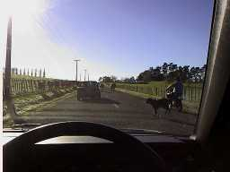
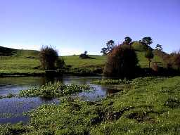
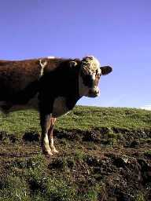
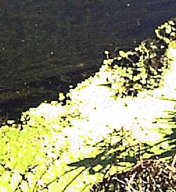

釣行日誌 ＮＺ編
７月 真冬の静かな鱒釣り
2000/07/01 (土)
暗いうちに起き出して車を南に走らせる。しだいに明るくなりオレンジに色に輝いた空は待ってましたと言わんばかりの快晴となった。
少し遠出をして、ダム湖の放水口下流のボートランプにやってきた。かなり増水している本流筋は、川底に藻が密生しており、いかにも大物が潜んでいそうな気配。
久しぶりにルアーリールを取り出し、はるか昔に買っていながらまだ１尾も釣っていないフェンウィックの7.5ft、ライトアクションにセットする。（笑）
これも久しぶりの地元定番ルアー、アブのトビー12gを結び、念波とともにキャスト。トビーの見事な動きに改めて感心させられる。
見事な風景、増水した流れ、伝統のルアー、と三拍子揃っているにもかかわらず、水面は弾けることなく、水中の脈動も伝わらず、真冬の寒さに耐えかねて車中へ逃げ込む。ケンブリッジの「マダム・ベーカリー」で買ったソーセージロールとコーヒーで暖をとる。
気を取り直して放水口直下の入り江を偵察するが、どこも藪がひどくて竿を振るスペースがない。駐車場に戻ると、お祖父さんと少年がルアーロッドを取り出している。
「おはようございます！ いやぁ水量が多くてあきらめましたァ」
「おお？そうかい？ まずはちょっと見てみるか...」
白いひげの見事なお祖父さんと孫らしき少年は、放水口へと小道を降りていった。良い風景である。
遠くまで来たものの、スプリングクリークの小さな虹鱒たちが忘れられず、いきなりとって返して北へ戻る。

途中、別の放牧場へ移動する途中の牛の群に出くわして、かなりやきもきさせられた。そんなに急がなくても川は逃げないのだが、日本人のせっかちさがついついこめかみをピクつかせる。（笑）
百頭以上の太った牛たち、最後尾をコントロールする黒い牧羊犬、スズキにまたがった太っちょの農場主、交差点を押さえて牛の散逸を防ぐ奥さんと娘さんのよく似た長靴姿など、のどかな牧場の朝が広がって行く。

おなじみの橋詰めに車を止めると、額に入れておきたいような冬晴れ。羊の柵を延長する仕事をしていた別の農場のご主人が、
「いやぁ、釣りにはもってこいの日和だなーぁ！」
と対岸から声をかけてくれた。
「今始めたばっかなんですよ。この辺通っていいですかーぁ？」
「ああいいよ！ 釣り人はみーんな川岸通って歩いてるからーぁ！」
大声で会話を交わし、牛の群を気にしながら下流へ向かう。
今日は水は澄みきっており、写真写りは絶好だが、こんな日のこの川はヒジョーに厳しいのである。

おまけに川辺まで牛の群が入り込んでおり、皆さんのご機嫌を伺わないとキャストする場所にたどり着けないのである。牛も以外と好奇心が強いようで、長いものをかついでウロウロしている二本足を見に来るやつもいる。
散在するウンチを避けながら腰を降ろし、一つ覚えのアダムスを結ぶ。ティペットは５Ｘ。この条件ではもっと細くしたいのだが、たまにダムから遡上してきた大物が鼻を突き出したりするので用心するに越したことはない。いざ、準備万端、立ち上がってキャストを始める。
「プハァ.....」
「ブフーフ.......」
「ボトボトボトボトボトトトト.....」
「ビジョジョジョジョジョジョジョージョオジョ....」
音響、芳香、視覚効果満点の、四足獣の群れの気配が背後からプレッシャーをかけてくる。平面に写し取られた写真集からは届いてこない圧倒的なリアリズムである。
「待てよ.....」
ふと気になって振り向くと、バックキャストの範囲内に雌牛が近づいてくる。
「あれの耳でも掛けた日にゃぁ、バッキングラインが20ポンドで50mとかいう問題では済まされないな.......」
苦笑しつつ、最初の、らしきポイントに、毛針をそっと置いてみる。
いやぁ今日は厳しいわぁ。みんな最初のフォルスキャストで右往左往して逃げ回るもんね。話にならん。今日ここで大物を釣ったら本物だけどなぁ....と弱気になって遡行する。
どうにも手の付けようのない大曲の暗い淵のまん真ん中で、見事なニジマスがゆぅら、ゆーらぁと漂っている。流れが緩いので守備範囲がかなり広い。かろうじてキャスト出来る可能性のあるのは上手の淵のアタマからだけ。ダメモトでアダムスを届けるが、あっけなく無視されて影は深みに消えていった。残り少ない自尊心と希望も消えていった。
カーブの流れ込みで、ドライに出た小さなニジマスを約束通りに掛ける。不調のまま、橋詰めに戻ってしまったので、これまで行ったことのない上流へ足を進める。
上流は水量が少なくなり、魚の影も見あたらない。右曲がりの淵のアタマに流木が沈んでおり、その下で30cmぐらいの魚影が数尾、変な動きを見せている。産卵時期なのでそっちの方が忙しいのかもしれない。10回ぐらい投げたドライを無視されたので、フェザントテールの小さいのを投げると、水中で銀色がきらめいた。合わせに乗ったのはこれまたかわいいヤマメのようにパーマークを残したニジマス。このぐらいのサイズだと Parr と分類されて稚魚扱いなのである。（笑）

まだ姿を見せている尺ものを未練がましく眺めていると、流れに乗って55cmはありそうな、険しい頭の格好をしたオスが流されるままに下ってきた。おそらくは上流で産卵行動を済ませてきたのであろう。
でかい頭部と痩せさらばえた胴体が不釣り合いな、悲しげなオスであった。そのオスは、ふらふらと失神寸前の風体で、私の足元の水草の影に体をかろうじてとどめた。
もはや釣りを続けることは思いもせず、いのちの燃焼の残りとも言うべき雄の虹鱒を眺めていると、静かな昼下がりのスプリングクリークはかすかな音を立てて流れ続けた。
帰途、色気を出して別の支流に降りて行き、濁りの著しい流れにちょっかいを出してみた。ドライをあきらめて重いフェザントテールとマーカーに変えた途端、オレンジ色のマーカーが横に沈んだ。合わせの後の絞り込み、そして跳躍。下流に持ち込まれないように、自分から下流に回り込み、淵の上手を泳がせる。ネットに収まったのは銀色の美しい35cmの虹鱒であった。
その支流のどんづまりは、滝が流れ落ちる広大な淵であった。増水期ならルアー、渇水の夕暮れならドライフライが面白そうな淵であったが、傾いた日差しとすり減った体力に促されて車に戻る。
牛に縁の多かった、７月最初の一日。冬真っ盛り。
2000/07/13（木）
昼前に家を出て、Ｗ川へ。この辺の川の名前はすべてＷで始まるのだ。（笑）
国道の橋詰めで車を止め、橋の下流の状況を伺うが、渡渉が難しそうなので諦めて例のポイントへ。牧場の柵をまたいで岸辺に降りると、なんと珍しい人の降りた後がある。
『ははぁ...さすがにスクールホリデーともなると川もにぎわうなぁ』
今週は、小・中・高校・大学共に学期半ばの休みであり、家族連れで休暇を取る人も大勢いるのである。
降りた場所から少し下流を探るが、反応無し。上流へ向かいながら、今日こそはあそこの鱒を驚かさないように.....と慎重に近づく。なんの変哲もない砂地の川底、岸辺の草むら近くにいつも（前２回）良い型の虹鱒が定位していたのだ。とは言え、左岸よりのそのポイントは、少しキャストが難しい上、川の中に立つとまったく鱒の気配がつかめない。
何回かキャストを繰り返し、あと数メートルかなぁ？と思って足を進めると、草むらから青い影がスーッと上流へ逃げてゆく。
『あちゃーっ！ またやったぁ！』
どうしてもやっこさんの居場所を見切れない。要反省。
左カーブにできた小さな淵、というか小さな深みは有望なポイントであるが釣りにくい。が、そこに至る目立たない瀬も、実は有望なポイントが連続しているのである。手前側、岸から50cmの筋をめどにして大きめのドライフライを流す。予想に反して岸から10cmの場所に定位していた大きな影が動き出し、速い流れに乗ったフライを追って流下する。結局ヤツはフライを加え損ねて荒い瀬の波間に消えた。
『チィッ.....』
さすがに真冬は水温が低く、鱒の動きも鈍い。手前から向こう岸まで４つか５つの有望な筋があって、どの筋にも執拗に白いパラシュート（なんと安易なフライ選定！）を流すが反応がない。先ほどの足跡の影響だろうか？
瀬を流し終えて、例の深みに投げる前に、ふと思いつき、下流を向いてフライを投げ、今まで釣っていた瀬の波間を逆引きする。スイッ、スイッと曳いていると、突如、瀬の底から紅い頬がパックリ口を開けて白いフライに襲いかかる。
『おおっ！ やはり出たか！』
が、しかし、やっこさんはフライが流れ下るものと決め、そのタイミングで口を開けているので、ティペットで曳かれているフライは彼の口には入らないのである。その瞬間にラインを緩めてフライを流せばストライクしたかもしれないが、それは後の思いつき。
お目当ての深みでは何の反応もなく、それから上流も、良いポイントがあったが鱒の気配は無い。風は吹くわ、岸の草むらにティペットが絡まるわ、対岸の切り株にフライを喰われるわといいこと無しで最初のセッションを終わる。というよりほうほうの体で逃げ帰る。
車に戻り、地図を見ながら第２セッションの計画を立てる。国道より下流が無理っぽいので、国道から現地点の間でなんとか入渓することにして、とろとろと車を走らせ、国道の橋が見える箇所で再挑戦とした。
砂地のスプリングクリークであり、流速さえ遅ければなんなく渡れる平瀬であるが、川の規模に比べ異様に豊富な流量がちょっと不安である。慎重に、一歩ずつ足運びを確認しながらなんとか右岸へ渡り終える。
岸辺には、水際から１メートルほど隔てて牧場の柵が延々と続き、茨のある草が密生しているので、歩ける余地がほとんど無い。しょうがないので川に降り、冷たい水に腿まで浸かって遡行する。少し歩くと、手前側に流れの緩い、おあつらえ向きのポイントがあった。14番のアダムス（こればっかり）に換え、逆手を我慢しながらキャストすると、30cmほどと思われる鱒が、ぽちょんとライズした。が、合わせに失敗。例によってやっこさんがくわえ損なったのである。ははぁ、いることはいるな。なんとかやる気を取り戻して釣り上がっていくと、沈んだ流木を中心に藻が密生している場所に来た。
流木の上流の淀みに浮かぶアダムス、静かな波紋、そしてざわめき。という具合にして２尾釣れた。どれもフライパンサイズ。ようやく自信とココロの平安を取り戻す。（笑）
この川は、良い川であるが釣りやすい区間がほとんど無いのが玉に瑕である。両岸に密生する灌木、張り巡らされた柵、早い流れ、一様な川底。その上、良型の鱒は、なぜか上流部にのみ生息しているようで、国道のあたりは尺ものばかりなのである。不思議だ。
真正面に、ポプラの高い木立が現れ、その根っこから緩い流れが広がっている。上流からの流れが数本の木の根に阻まれて、静かな平瀬となっているらしい。昔、見よう見まねで巻いた茶色のハックルにベージュのCDCをポストに立てたパラシュートを、少し長めのキャストでそれぞれの筋に落とし込む。
『ふわり....ぽとん....すいーっと、さぁ出ろ！』
注文通りに飛沫が上がり、ぐいぐいとラインを引き込んでゆく。さっきのよりも力強い引きが、対岸のエグレや流心に入って抵抗した後で、やっと水面に浮かんできた。尺を少し越えた綺麗な虹鱒。これが夏なら跳躍と反転の祝宴であったろうが、今は真冬。地味な戦いに終始した。
同じ位置で、同じフライ。1.5m左側の筋で、同じようなライズで次の騒ぎが始まり、ニコニコと、さっきまでの自己嫌悪が飛沫にかき消されて冬の午後が流れていった。
釣行日誌ＮＺ編 目次へ
サイトマップ
ホームへ
お問い合わせ